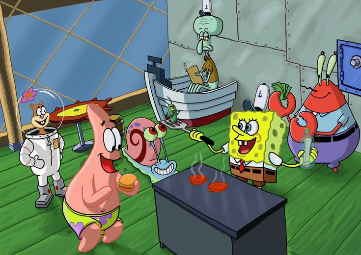

Nous sommes une pizzeria qui vend en
ligne et sur place, des pizza de bonne qualitéet virement tree tree
bonnes.
Nous proposons aussi des burger nommet Krabby Patty Nous sommes
fiers de proposer un service client exceptionnel et rapide pour que
vous soyez satisfait.
Nous vous invitons à visiter notre site web et à découvrir notre
nourriture "fast-food".
Et Nous sommes sûrs que vous trouverez quelque chose qui vous plaît.
Pizzorino est une pizzeria située au cœur de Paris. Elle est connue pour ses délicieuses pizzas, qui sont préparées avec des ingrédients frais et de haute qualité. Le personnel est sympathique et accueillant, et l'atmosphère est détendue et invitante. Pizzorino est un endroit idéal pour déguster une délicieuse pizza et un verre de vin entre amis ou en famille.
Ingrédients :
Préparation :
Ingrédients :
Préparation :